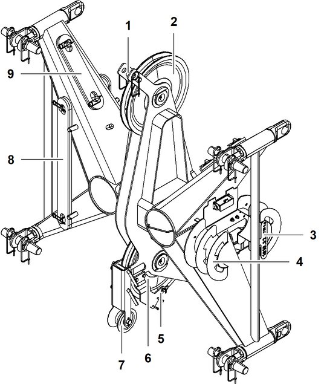

ID_4d6dfe1eba644b829c8c954ad7b35104-afd95f1f003141afa8fbc5a1ed296c84-de-DE.html
true
Midfall 1916.32

Fig. 258: Midfall 1916.32 mit Stahl-Haltestangen
Fig. 258: Midfall 1916.32 mit Stahl-Haltestangen
Seilschutzvorrichtung | |
Obere Seilrolle | |
Ausleger-Typenschild | |
Kabelhalter | |
Hubendschalter | |
Untere Seilrolle | |
Seilschutzvorrichtung | |
Transportposition (2x) der Midfall-Koppellaschen 890 mm (2.92 ft) | |
Aufbewahrungsposition (2x) der Koppellaschen 390 mm (1.28 ft) |
Benennung | Wert | |
|---|---|---|
Systemlänge | 500 mm 1.64 ft | |
Systembreite | 1900 mm 6.23 ft | |
Systemhöhe | 1600 mm 5.25 ft | |
L | Länge | 2000 mm 6.56 ft |
B | Breite | 750 mm 2.46 ft |
H | Höhe | 2060 mm 6.76 ft |
Gewicht (inkl. Koppellaschen) | 715 kg 1,576 lb | |
Doppelkonusbolzen Ø | 60 mm 2.36 in | |
Technische Daten - Midfall 1916.32